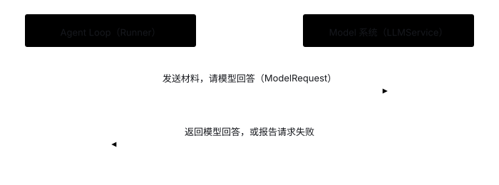
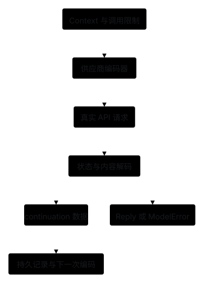

Model：适配模型服务与通信协议
1. 问题起点：为什么要把模型通信单独拆成模块？
调用模型服务需要处理 API Key、端点地址、SDK 客户端连接，以及特定服务商要求的消息编码格式。如果把这些协议细节直接写进 Runner 主循环，一旦切换模型服务或升级协议（如从 Chat Completions 切换到 Responses API），整个循环控制逻辑都要跟着重写。
因此，将模型通信独立为 Model 模块，通过两个核心抽象隔离变化：
- 统一调用服务（
LLMService.invoke()）：对内管理 API Key、Base URL 与 SDK 客户端连接生命周期；对外向 Runner 提供统一的请求入口。 - 协议适配器（Adapter）：负责将项目内部的统一数据结构（
ModelRequest/ModelResponse）与特定模型服务商的协议格式互相转换。切换模型协议时只需更换适配器。
2. 黑盒交互：Runner 如何调用 Model？
以调用工具读取文件的场景为例，Runner 与 Model 的一次交互流程如下：
- Runner → Model：提交包含系统指令、当前消息链、可用工具 Schema 与最大输出限制的
ModelRequest。 - Model 内部处理：将内部消息编码为 SDK 请求格式，调用远端模型接口，再将返回结果解码为统一的
ModelResponse。 - Model → Runner：返回包含回答文本或
ToolCall列表的ModelResponse；若发生网络故障、鉴权失败或输出截断，则抛出明确的ModelError。

与周边模块的职责边界：
读源码时再看：ModelResponse 里还保存了什么？
除了回答文字和工具调用，ModelResponse 还保存了生成停止原因（stop_reason）、Token 用量（usage），以及下一轮请求需要原样带回的 continuation data（如模型推理项等协议续接数据）。若响应因超出输出上限被截断（length）或被安全策略拒答，循环会立即报错停止，防止执行残缺不全的工具参数。
展开编码、请求与解码管线

工具参数在适配器层保留原始 JSON 字符串，交由工具系统统一解析与校验。
按需查阅：协议差异、适配方案、流式与重试
3. 不同模型协议之间有什么差异？
Chat Completions 协议按消息列表组织交互：Assistant 消息中的 tool_calls 列表与后续的 tool 角色消息通过 tool_call_id 配对。Responses 协议则按输出项（Output Items）表示文本、函数调用与推理项，函数执行结果通过 call_id 配对。
参考 阿里云函数调用文档 与 OpenAI 函数调用文档：多轮工具调用不仅要回传函数结果，还必须按服务商协议保留完整的调用记录与推理续接项（continuation data）。
4. 适配方案的三个设计维度
- 内部消息表示：直接透传单一 SDK 对象开发最快，但会让循环绑死特定供应商；定义项目内部统一的
ModelRequest / ModelResponse再由适配器转换，能让 Runner 与底层协议彻底解耦。 - 服务端连接方式：可选择原生 SDK 适配器、OpenAI 兼容端点或统一模型网关。
- 循环控制权归属：本地 Runner 掌控循环时，Model 每次只完成单轮请求；若改用托管 Agent API，则需重新划分会话状态与工具执行权的归属。
5. 开源实现参考
- pi（agent-loop.ts）：先执行
transformContext整理上下文，再通过convertToLlm转换为供应商协议格式，将“挑选上下文”与“协议编码”彻底解耦。 - Deep Agents（graph.py）：在装配层注入模型与中间件，避免核心循环内部散落供应商分支判断。
- OpenAI（Agent 开发指南）：清晰区分底层模型 API、Agent SDK 与托管运行时三层不同接口。
6. 流式响应（Streaming）的额外约束
接入流式输出时，模型会分段返回文本增量与工具参数片段。用户可见文本可边收边展示，但工具调用必须按 ID 收集完整并通过 JSON 与 Schema 校验后才能执行——网络中途断开留下的半截 JSON 绝不能传入工具函数。
7. 错误重试与模型切换
参数非法、鉴权失败与上下文超限属于确定性错误，不可原样重试；速率限制（429）或临时网络抖动可在有限次数内退避重试。跨供应商切换模型时，需用通用历史消息重新编码并复核窗口预算，不能把原供应商私有的加密 continuation 数据直接发给新模型。
8. 本项目当前选择与未实现范围
9. 动手练习与期望达到的效果
阅读 openai_chat.py 与 service.py，并运行模型模块单元测试：
uv run pytest tests/test_models.py tests/test_llm_service.py期望达到的效果：
- 协议与循环解耦：Runner 只依赖
Model协议，新增或替换模型适配器无需修改 Runner 与任何工具函数（见 test_models.py）。 - 续接数据完整保留：模型返回的协议续接数据（continuation data）、停止原因与 Token 用量在多轮调用间无损传递。
- 异常与生命周期受控：配置缺失、输出截断、模型拒答或服务关闭后再次调用均明确抛出错误，绝不静默吞掉异常（见 test_llm_service.py）。